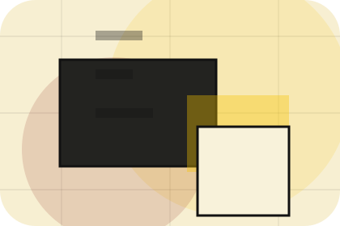
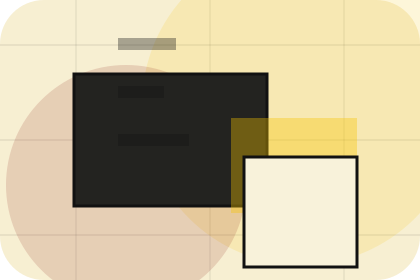
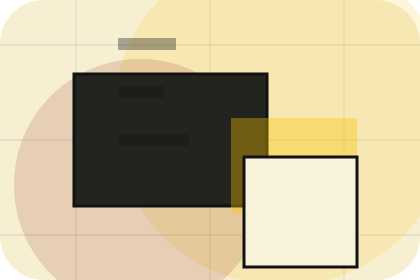

Platform
Open the platform route for mission, editorial, standards so publishing, information & knowledge platforms visitors can compare context, proof, and next steps.
Open PlatformHome / 01
Home opens as a clear publishing decision hub: what Index offers, who it helps, why it matters, and which route to take first.
The first screen combines positioning, proof, primary action, and fast internal navigation, so people can act immediately or compare the rest of the home route with context.
Editorial masthead hero
Select the closest route and Index keeps the next step, proof, and follow-up expectation aligned with authority and discovery.

Site atlas
This homepage is the working index for publishing, information & knowledge platforms: it explains the offer, points to every deeper page, and keeps the final action visible without making the visitor hunt.
A knowledge platform with magazine columns, archive search, author cards, and newsletter conversion. The page links problem, promise, services, process, proof, questions, support, legal routes, and conversion paths into one clear decision map.
Open the platform route for mission, editorial, standards so publishing, information & knowledge platforms visitors can compare context, proof, and next steps.
Open PlatformOpen the library route for categories, search, featured so publishing, information & knowledge platforms visitors can compare context, proof, and next steps.
Open LibraryOpen the articles route for latest, analysis, guides so publishing, information & knowledge platforms visitors can compare context, proof, and next steps.
Open ArticlesOpen the authors route for experts, profiles, credentials so publishing, information & knowledge platforms visitors can compare context, proof, and next steps.
Open AuthorsOpen the reports route for research, data, downloads so publishing, information & knowledge platforms visitors can compare context, proof, and next steps.
Open ReportsOpen the newsletter route for promise, topics, frequency so publishing, information & knowledge platforms visitors can compare context, proof, and next steps.
Open NewsletterOpen the submissions route for guidelines, topics, review so publishing, information & knowledge platforms visitors can compare context, proof, and next steps.
Open SubmissionsOpen the faq route for access, sources, rights so publishing, information & knowledge platforms visitors can compare context, proof, and next steps.
Open FAQOpen the contact route for editorial, submissions, partnerships so publishing, information & knowledge platforms visitors can compare context, proof, and next steps.
Open ContactReview the local assets, icons, OG images, and static handoff materials used by Index.
Open Asset SystemUse the full sitemap to recover any route and verify the whole Index structure.
Open SitemapRead the privacy route before sending personal details through the static form.
Open PrivacyManage consent and understand the privacy-safe analytics approach.
Open CookiesHome / 02
Promise defines the better state Index is built to create, with enough detail to make the promise believable.
A knowledge platform with magazine columns, archive search, author cards, and newsletter conversion. The section grounds that direction in concrete benefits, visible tradeoffs, and a next route visitors can use when the promise feels relevant.
Open PlatformPromise defines what becomes clearer, easier, or safer when Index is the chosen route.
The benefit is tied to authority and discovery, not a vague quality claim.
Visitors get a linked path to compare the promise against services, standards, or examples.
Home / 03
Topics adds editorial context to the home route, using the print magazine archive structure to support authority and discovery before visitors choose a next step.
Index uses column article cards and focused copy to make the decision easier to scan, aligning the section with authority and discovery rather than filling space.
Open LibraryIndex structures topics around context, judgment, and a clear next route so visitors can compare the block quickly before they subscribe.
SubscribeHome / 05
Archive adds editorial context to the home route, using the print magazine archive structure to support authority and discovery before visitors choose a next step.
Index uses column article cards and focused copy to make the decision easier to scan, aligning the section with authority and discovery rather than filling space.
Open AuthorsArchive gives the page a specific angle instead of repeating the navigation label.
The column article cards show what to compare, what to avoid, and what matters most for publishing, information & knowledge platforms visitors.

The final cue points to a useful internal route so the section keeps the journey moving.
Home / 08
Trust gives the proof layer for home: standards, evidence, and reassurance that make the next decision feel grounded.
Instead of relying on vague claims, Index presents visible standards, process cues, and proof artifacts that help publishing visitors judge fit.
Open SubmissionsIndex structures trust around evidence, standard, and a clear next route so visitors can compare the block quickly before they subscribe.
SubscribeHome / 09
Questions handles buying doubts directly so visitors can understand timing, fit, limits, and the safest next step.
Answers are short by design: enough to remove hesitation, not so much that the page turns into documentation before the visitor can act.
Open Contact
Questions gives the page a specific angle instead of repeating the navigation label.
The column article cards show what to compare, what to avoid, and what matters most for publishing, information & knowledge platforms visitors.

The final cue points to a useful internal route so the section keeps the journey moving.
Index starts with a focused intake so the recommendation matches the visitor's context, risk, timing, and readiness.
Each route explains inclusions, exclusions, documents, timing, and the decision points that affect final delivery.
The theme uses print magazine archive, column article cards, and library search, author filter, newsletter modal rather than a shared template rhythm.
Editorial masthead hero
Select the closest route and Index keeps the next step, proof, and follow-up expectation aligned with authority and discovery.
Information is provided for planning and should be reviewed for the final client, location, and operating rules.